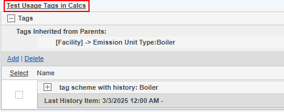
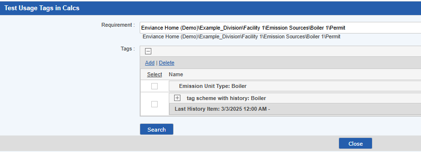
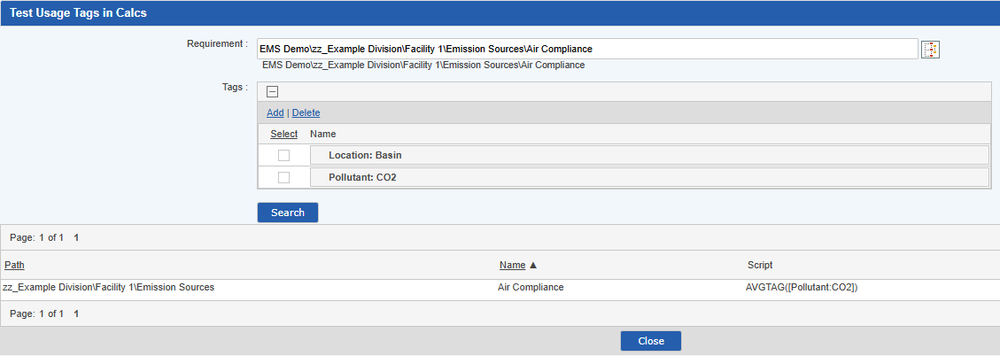

Use the Test Usage Tags in Calcs link to test how Requirements with specific tags are resolved in Tag Aggregation Calculations.
You can test all tags associated with any requirements type except Non-Numeric requirements.
To test which tags are used in requirements calculations:

The Test Usage Tags in Calcs window opens.


Related topics: